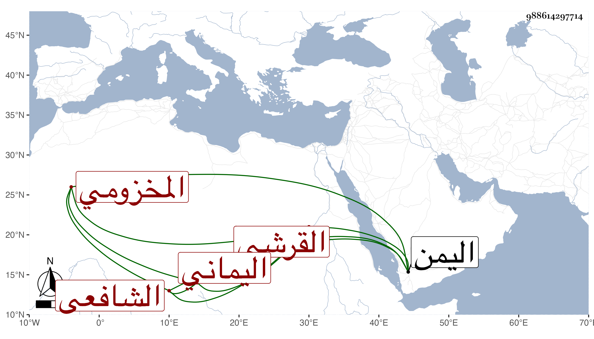

0902Sakhawi.DawLamic.ITO20230111-ara1.EIS1600.988614297714
Biography ID: 988614297714
758
محمد بن أبي الغيث بن أبي الغيث بن علي بن حسن بن علي الجمال القرشي المخزومي الكمراني بفتحات نسبة لجزيرة كمران اليماني الشافعي . ولد بأبيات حسين من اليمن وتفقه فيها بعمر بن أحمد بن محمد بن زكريا وعلى الأزرق وتقدم في الطب والنحو وصنف فيهما ففي النحو مقدمتين وفي الطب مصنفا كبيرا وكان من المتبحرين في الفقه وسائر العلوم وعليه مدار الفتوى والتدريس ببلده أبيات حسين وتفرد بذلك مدة في حياة البدر حسين الأهدل وكان للناس فيه اعتقاد ولهم عليه إقبال واعتماد بخلاف غيره لتواضعه وحسن أخلاقه ، وفي آخر حياته اشتغل بالنظر في كتب الطب وصار الناس يعتمدون عليه فيه . ولم يزل على ذلك حتى مات في منتصف شعبان سنة سبع وخمسين ورأيت من أرخه في آخر ليلة الاثنين سابع شعبان سنة ست بأبيات حسين ودفن هناك والثاني أشبه ووصفه العفيف بالفقيه الصالح الورع وقال أخبرني من أثق به أنه فقيه محقق وعالم مدقق عمدة في الفتوى له مشاركة جيدة في سائر الفنون وقد وقفت له على مؤلف صغير في مسئلة جرى فيها بين الفقهاء كلام في النذر وهي ما إذا قال نذرت كذا فقال صاحب الترجمة إن ذلك صيغة صحيحة ملزمة صريحة وقرر ذلك تقريرا حسنا وخالفه الشرف إسمعيل بن المقري .
